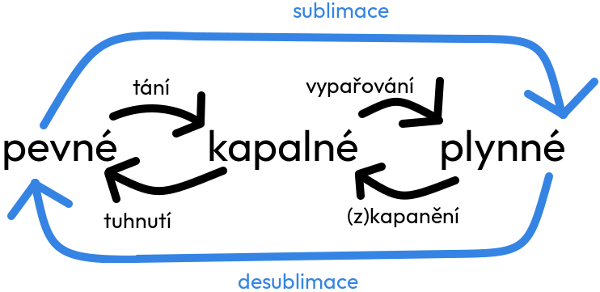

Změna skupenství
Světlo je elektromagnetické záření, které vnímáme našimi očima. Optika se zabývá studiem světla, jeho šířením, lomením, odrazem a rozkladem. Základními jevy jsou refrakce, disperze a interference. Optické jevy se využívají v mnoha technologiích, jako jsou brýle, mikroskopy a dalekohledy.
Informace
Skupenství na Zemi: pevné, kapalné a plynné.
Přechody mezi skupenstvími
Tání
- z pevné na kapalnou
- teplo se musí dodat (zahřát)
- různé látky tají při různé teplotě (led taje pří 0˚C)
Tuhnutí
- opačná změna k tání
Vypařování
- z kapalného na plynné
- teplo se musí dodat
- látky vypařují při různé teplotě
- opačná změna k kapalnění
- rychlost vypařování závisí na - teple, proudění vzduchu, ploše
- kapalina se vypařuje za každé teploty
Var
- není to změna skupenství
- vypařování, které probíhá při určité teplotě a v celém objemu
Kapalnění
- opačná změna k vypařování
Sublimace
- změna z pevné na plynnou
- příklad - pevný jód -> plynný jód
Desublimace
- změna z plynné na pevnou
- příklad - námraza - vzniká desublimací vodní páry ve vzduchu na studené povrchy